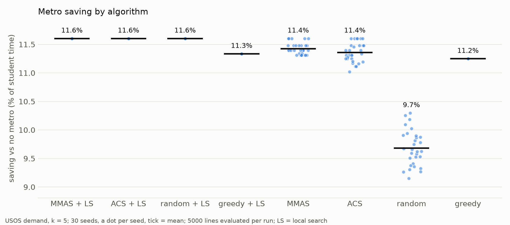
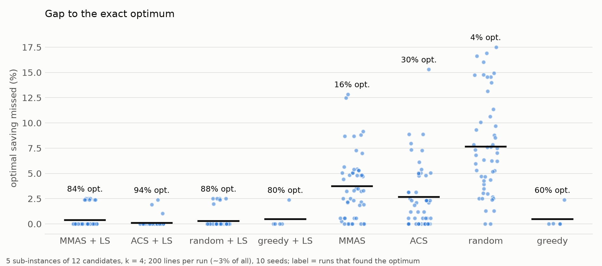
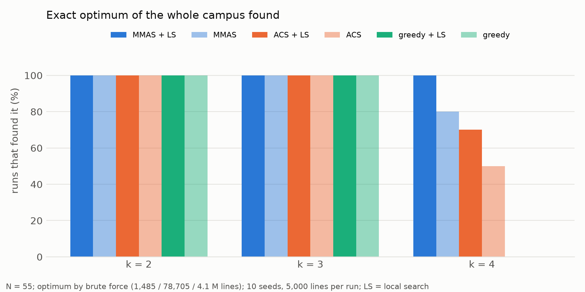
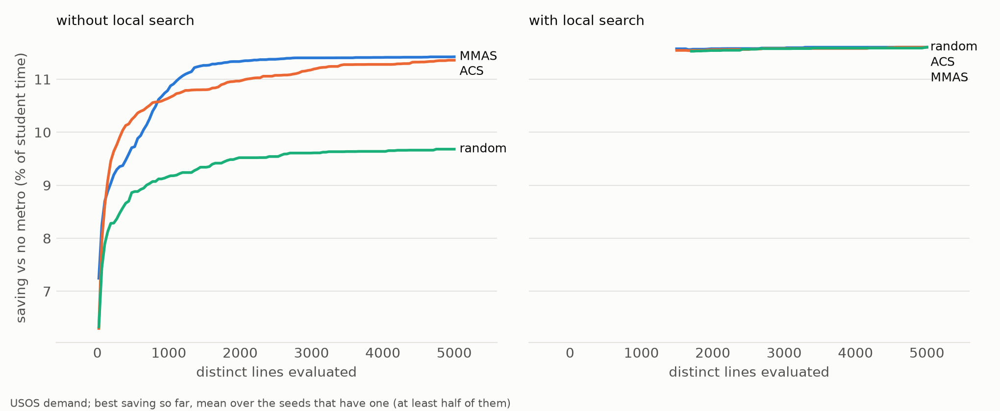
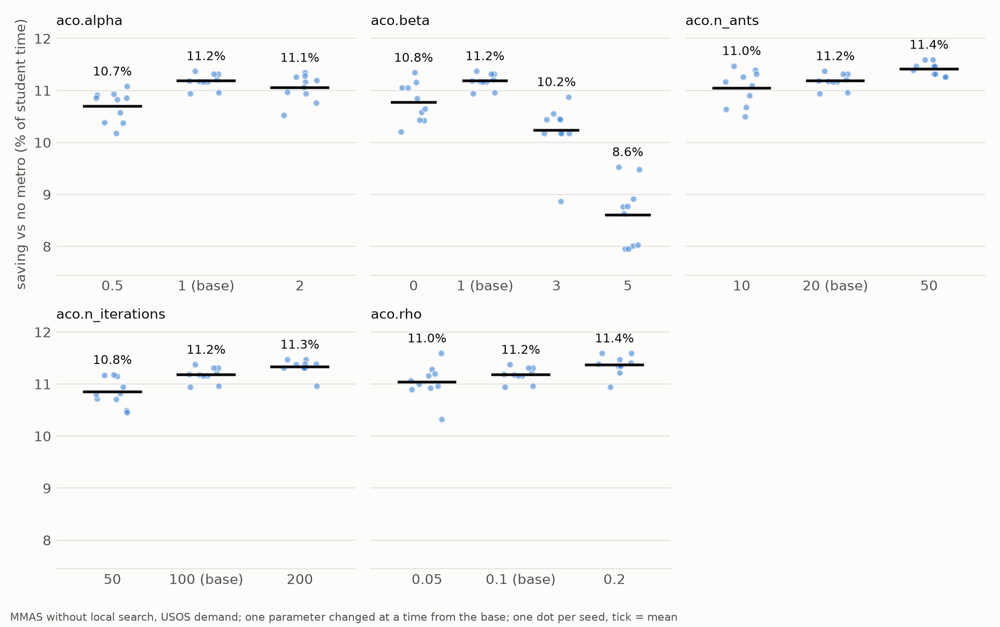
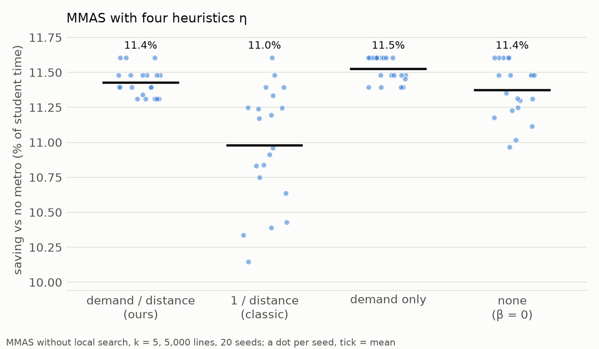
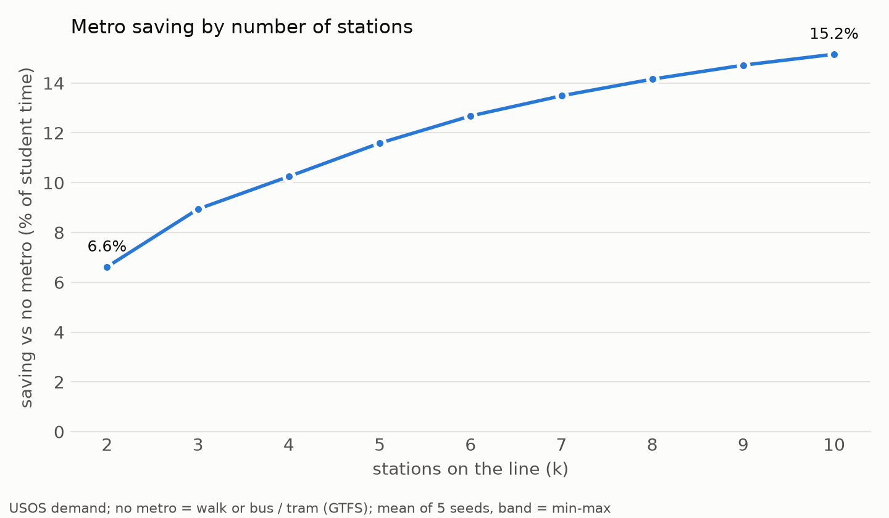
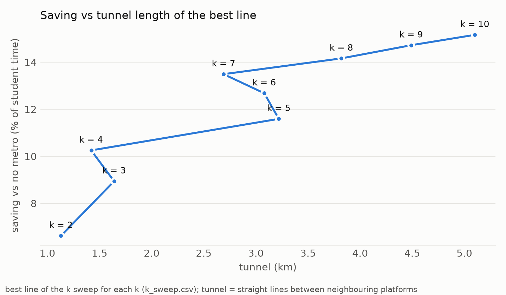
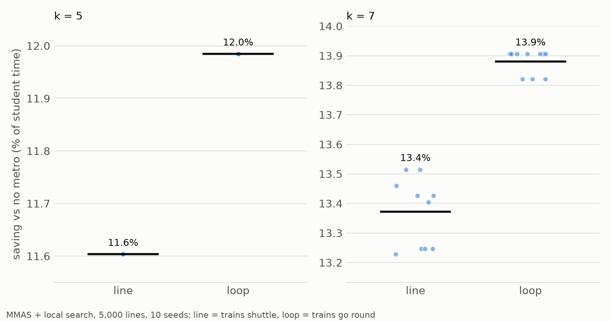
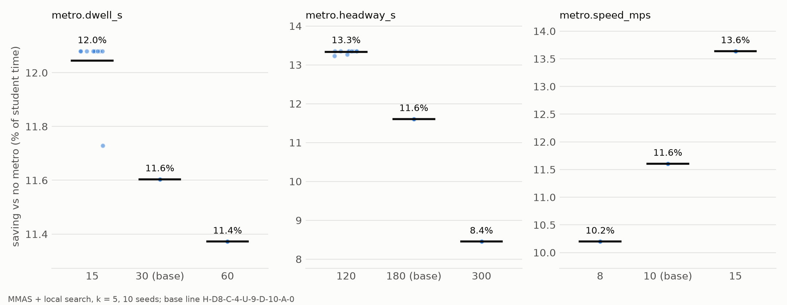

Algorytmy inspirowane naturą · prezentacja końcowa
Czy mrówki znalazły dobrą linię?
[Imiona i nazwiska zespołu] · [przedmiot, prowadzący]
MMAS, 5 stacji, jeden przebieg:
H-D8 – C-4 – U-9 – D-10 – A-0
11,6 %
mniej czasu przejść 22 tys. studentów
1 Czy mrówki są lepsze od prostszych metod?
2 Czy to w ogóle optimum?
3 Ile stacji ma sens i jaka linia?
4 Czy wynik zależy od założeń?
Ant Colony System: częściej bierze najlepszą stację, a feromon „zużywa się” na odcinkach, którymi właśnie przeszły mrówki.
Dorigo, Gambardella 1997
Wymiana, zamiana i przestawienie stacji, aż nic nie poprawia. Działa na najlepszej linii każdej iteracji.
Stützle, Hoos 2000
Losowe linie, metoda zachłanna (najlepsza para, potem najlepsze wstawienie) i przegląd zupełny tam, gdzie się da.
5 000
różnych ocenionych linii dla każdej metody
30
niezależnych uruchomień (ziaren)
A₁₂
szansa, że przebieg A oszczędza więcej niż przebieg B
Testy nieparametryczne (Derrac i in. 2011): Wilcoxon oraz Mann–Whitney z korektą Holma; A₁₂ = 0,5 to brak różnicy, od 0,71 efekt duży.

Bez LS: MMAS 11,42 %, ACS 11,36 %, zachłanny 11,25 %, losowe 9,68 %
MMAS > losowe: A₁₂ = 1,00. MMAS vs ACS: nieistotnie (p = 0,08)
Z LS: MMAS, ACS i losowe dają tę samą linię, 11,60 %
k = 5, 5 000 linii, 30 uruchomień; LS = lokalne przeszukiwanie. Przy k = 10 (60 000 linii): MMAS + LS 15,14 %, zachłanny + LS 14,85 %.

Budżet: 3 % wszystkich linii
Z LS: optimum w 84 % (MMAS), 94 % (ACS), 88 % (losowe) uruchomień
Bez LS: 16 %, 30 %, 4 %; zachłanny 3 z 5
5 podinstancji po 12 kandydatów z największym popytem, k = 4 (5 940 linii), 200 linii na uruchomienie, 10 ziaren.

10 / 10
uruchomień MMAS + LS trafia dokładne optimum przy 4 stacjach, mając 0,12 % linii
Zachłanny: nigdy (brakuje mu 0,07 % możliwej oszczędności)
Przegląd zupełny: 1 485 / 78 705 / 4 092 660 linii dla k = 2 / 3 / 4 (k = 4: 15 min). Budżet 5 000 linii, 10 ziaren.

Bez LS: ACS rośnie szybciej na początku, MMAS dogania
Zachłanny prześcignięty po ~1 950 (MMAS) i ~2 870 (ACS) liniach
Z LS: pierwsze zejście ~1 500 linii i od razu ~11,5 %
k = 5, 30 uruchomień; średnia najlepszej dotąd oszczędności.

| β | oszczędność |
|---|---|
| 0 | 10,77 % |
| 1 | 11,18 % |
| 3 | 10,23 % |
| 5 | 8,61 % |
Silna podpowiedź popytu prowadzi mrówki w złą stronę. α = 1; ρ i liczba mrówek mają mały wpływ.
MMAS bez LS, 20 mrówek × 100 iteracji, 10 ziaren, jeden parametr naraz.

1 / odległość (klasyczna): 10,98 %, gorzej nawet niż bez podpowiedzi (p = 0,001)
Nasza (popyt / odległość): 11,43 %
Sam popyt: 11,52 %, najlepszy
Dobre linie mają długie przeskoki: „blisko” myli mrówki.
MMAS bez LS, k = 5, 5 000 linii, 20 ziaren. Odpowiednik porównania „zmodyfikowane vs klasyczne ACO” (Korzeń, Kruszyna 2025).

| stacje | oszczędność |
|---|---|
| 2 | 6,6 % |
| 5 | 11,6 % |
| 7 | 13,5 % |
| 10 | 15,2 % |
Powyżej 7 stacji każda kolejna daje mniej niż 0,7 p.p.
MMAS, 5 ziaren na każde k; k = 2, 3, 4 sprawdzone przeglądem zupełnym.

k = 4: 1,4 km tunelu, 3 070 studento-godzin tygodniowo na km
k = 5: 3,2 km, tylko 1 530 na km
k = 7: 2,7 km, krótszy niż przy 5 stacjach
Z kosztem tunelu k = 4 lub 7 byłyby lepsze od 5.
Najlepsza linia dla każdego k; tunel po prostej między peronami.

5 stacji: 11,98 % pętla vs 11,60 % linia
7 stacji: 13,88 % vs 13,37 %
Te same stacje, inna kolejność; tunel 3,85 km zamiast 3,22 km
MMAS + LS, 5 000 linii, 10 ziaren; pętla wygrywa w każdym uruchomieniu (A₁₂ = 1).

Oszczędność: od 8,4 % (pociąg co 5 min) do 13,6 % (15 m/s)
Stacje prawie zawsze te same: podobieństwo zbiorów ≥ 0,94
Najsilniej działa częstotliwość: czekanie płaci każdy
MMAS + LS, k = 5, 10 ziaren; jeden parametr naraz wokół 30 s postoju, 180 s odstępu, 10 m/s.
| bez metra | z metrem | |
|---|---|---|
| studento-godziny / tydzień | 41 095 | 35 959 |
| spóźnione zajęcia | 503 | 450 |
| przejścia metrem | — | 28,8 % |
| autobus / tramwaj | 40,5 % | 23,1 % |
12,5 %
mniej czasu; ok. 15 min na studenta tygodniowo
Każde z 286 tys. przejść z prawdziwym rozkładem metra (co 180 s), autobusów i tramwajów (GTFS); linia H-D8 – C-4 – U-9 – D-10 – A-0.
| Korzeń, Kruszyna 2023 / 2025 | ten projekt | |
|---|---|---|
| zadanie | ocena 5 gotowych wariantów tunelu; jedna linia tramwajowa | wybór i kolejność stacji, 2·10⁸ linii |
| popyt | mieszkańcy przy stacji | 286 tys. przejść z planu zajęć |
| inne środki | liczba linii jako atrakcyjność | autobus / tramwaj w funkcji celu |
| sprawdzenie | ranking; vs obecna trasa | przegląd zupełny, 4 metody, testy, symulacja |
Int. J. Environ. Res. Public Health 20 (2023) 4960; Sustainability 17 (2025) 2468; inspiracja: Goss i in., Naturwissenschaften 76 (1989).
Wyraźnie lepsze od losowego i zachłannego; o jakości decyduje lokalne przeszukiwanie.
MMAS + LS znajduje dokładne optimum za każdym razem tam, gdzie da się to sprawdzić.
H-D8 – C-4 – U-9 – D-10 – A-0: ok. 12 %, 15 min na studenta tygodniowo; sensownie 5–7 stacji.
Zmieniają wielkość oszczędności, nie wybór stacji.
populacja syntetyczna z grup USOS
jeden tydzień zajęć
brak tłoku i pojemności pociągów
brak kosztu budowy w funkcji celu
budynki bez wnętrz, tunel po prostej
czasy dojść niesprawdzone w terenie
Pytania?
Slajdy, wykresy i wizualizacja: kpustelnik.github.io/natural_ai/etap-2